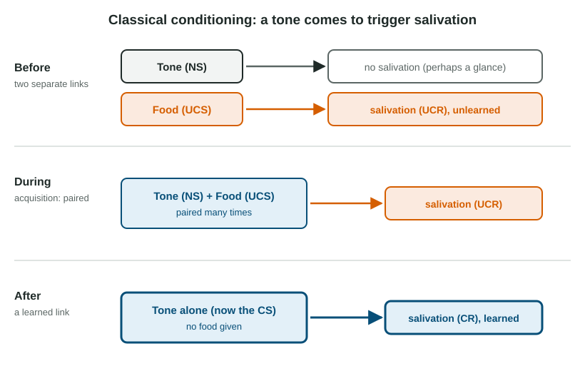

Some reactions you never chose. The smell of a hospital makes your shoulders tense; a song from last summer lifts your mood; the sound of a dentist's drill makes you wince before anything touches you. Each of these is a reaction to a signal. You learned that the signal comes before something that matters, and your body started to react to the signal itself. This kind of learning by association is classical conditioning.
Learning, and the behaviorist starting point
Learning is a lasting change in behavior or knowledge that comes from experience. The simplest kind needs no pairing at all: habituation, where a response fades to a stimulus that keeps repeating without consequence. You stop noticing the hum of a refrigerator or the trains outside a new apartment.
Early in the twentieth century, behaviorism argued that psychology should study what can be observed and measured: stimuli, responses and the links between them. Ivan Pavlov, a Russian physiologist studying digestion, noticed that his dogs began to drool before food arrived, at the sound of footsteps or a lab bell. Behaviorists such as John Watson took that observation and made it the model of how environments shape behavior. The names are memory hooks; the exam asks about the ideas.
The four labels, and how to find them

- The unconditioned stimulus (UCS) triggers a response with no learning: food, a shot, a loud bang, a puff of air to the eye.
- The unconditioned response (UCR) is that automatic response: salivating, crying from pain, startling, blinking.
- A neutral stimulus (NS) causes no such response at first. When it is paired with the UCS and comes to trigger the response, it is the conditioned stimulus (CS).
- The conditioned response (CR) is the learned response to the CS.
Why does pairing work? The CS becomes a signal. Learning is fastest when the neutral stimulus comes just before the UCS and reliably predicts it. A stimulus that comes after the UCS, or appears just as often without it, predicts nothing, and little is learned.
Worked example: label a fresh scenario. Every time Ana's cat hears the treat bag crinkle, it gets a treat and purrs. Now the cat purrs at the crinkle before any treat appears.
- What causes the response with no learning? The treat. That is the UCS.
- What is the automatic response to it? Purring at the treat: the UCR.
- What was neutral and came first? The crinkle of the bag. After pairing it is the CS.
- What is the learned response? Purring at the crinkle: the CR.
The UCR and CR are the same behavior here (purring). What differs is what triggers it. Always ask "triggered by what?" before you label a response.
What happens after learning
| Term | What happens | Example |
|---|---|---|
| Acquisition | NS and UCS are paired; the CR is learned | A tone comes before food many times |
| Extinction | The CS comes without the UCS; the CR weakens | The tone sounds, but no food follows |
| Spontaneous recovery | After a rest, an extinguished CR returns, weaker | Next day, the tone brings some drool again |
| Generalization | Stimuli similar to the CS trigger the CR | A slightly higher tone also brings drool |
| Discrimination | Only the CS triggers the CR, not similar stimuli | The dog drools to one tone, not to a buzzer |
Extinction is not forgetting. Spontaneous recovery shows the link survives, and a CR that was extinguished is learned again faster than the first time. That is why an old fear can flare up years later.
Two further ideas extend the basic pairing. In higher-order conditioning, a new stimulus is paired with an established CS (not with the UCS), and it becomes a CS too: if a bell already brings drool, a light that comes before the bell can start to bring drool. In counterconditioning, a feared CS is paired with something that triggers an incompatible, pleasant response, so calm replaces fear.
Biology sets limits
Not every pairing is equally easy to learn. In the 1960s, John Garcia's experiments with rats showed that rats made sick after drinking flavored water avoided that flavor afterward, even when the illness came hours later, but did not link the illness to a light or click. This is taste aversion: one pairing of a taste with illness can be enough. It breaks the usual rule that the CS must come right before the UCS, and it makes sense through biological preparedness: natural selection favored animals that quickly learned to avoid foods that made them sick. People likewise learn fears of snakes and heights more easily than fears of flowers or toasters.
A famous study, read honestly
In 1920 Watson and Rosalie Rayner paired a loud noise with a white rat until an 11-month-old infant, "Little Albert," cried at the rat and at other furry things (generalization). It is often told as proof that phobias are conditioned. Read it with care. It was a single case with loose measures, later attempts to repeat it had mixed results, and the researchers did not remove the fear before the child left. No ethics board would approve it today: it failed to protect a child from harm. The broad idea that fears can be learned by association is well supported by later research; this one study is a memory hook, not strong evidence.